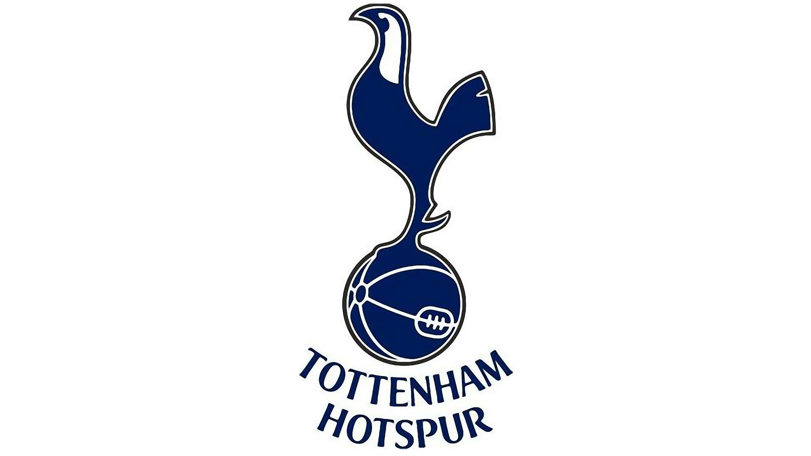
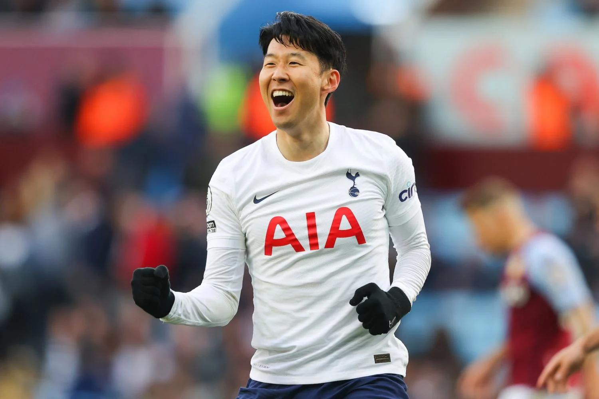
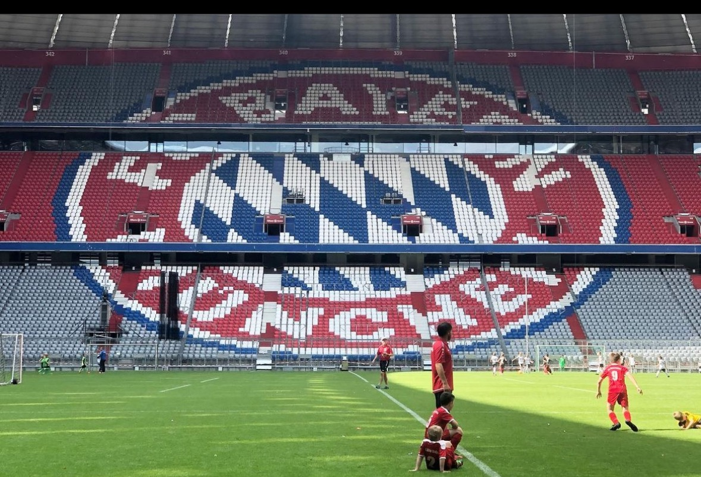
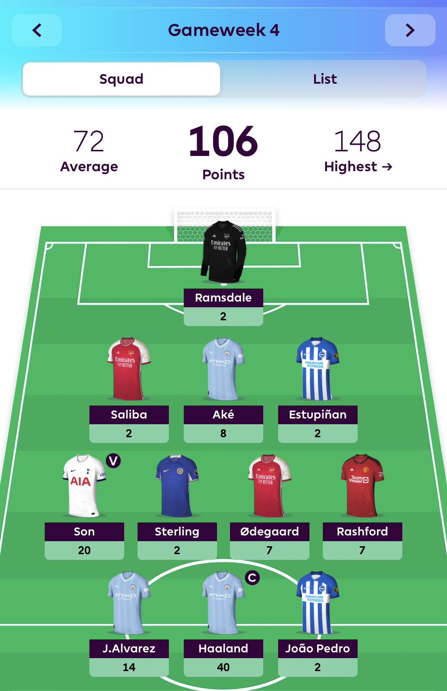

Soccer Photos
Soccer is very important to me and gives me a sense of happiness when playing. But when im not playing, I love to watch and track soccer news happening all around the world. I love watching professional soccer as it is relaxing and entertaining.
This is a picture of my favorite soccer team, Tottenham Hotspurs
This is a picture of my favorite soccer player, Son Heung-Min
This is a picture of me playing at Allianz Arena, the home of the Bundesliga team FC Bayern Munchen
This is a picture of the soccer league I follow the closest, The English Premier League
This is a picture of my EPL fantasy team, this is something I enjoy doing during the soccer season